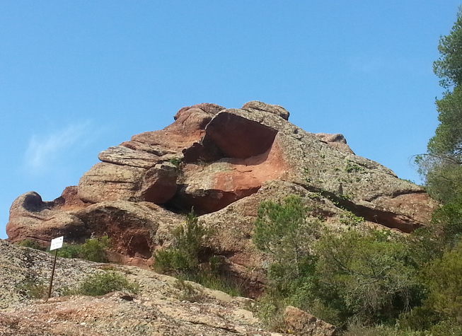
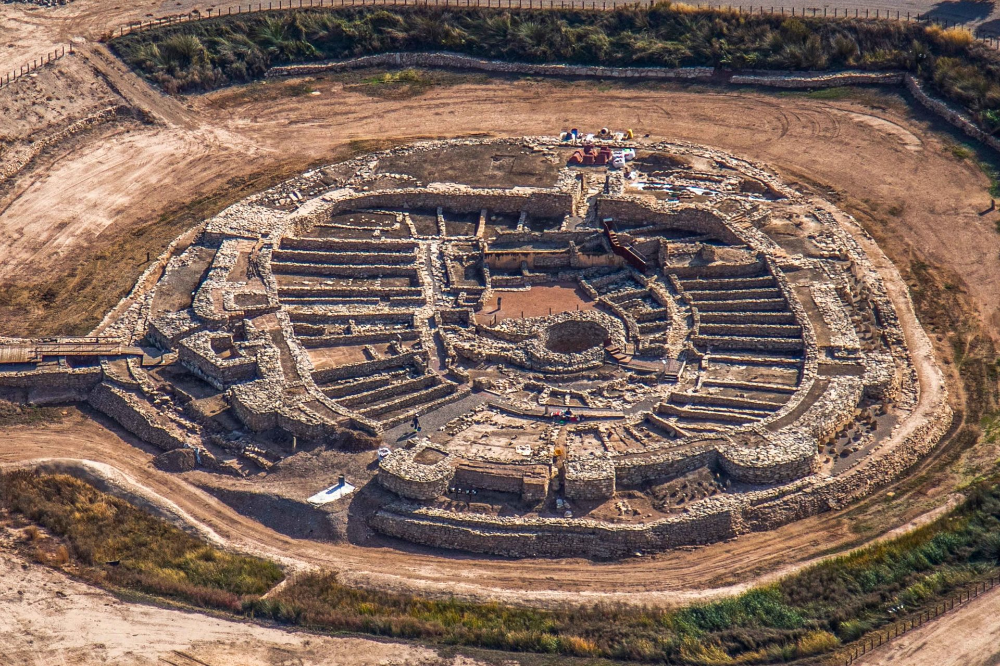
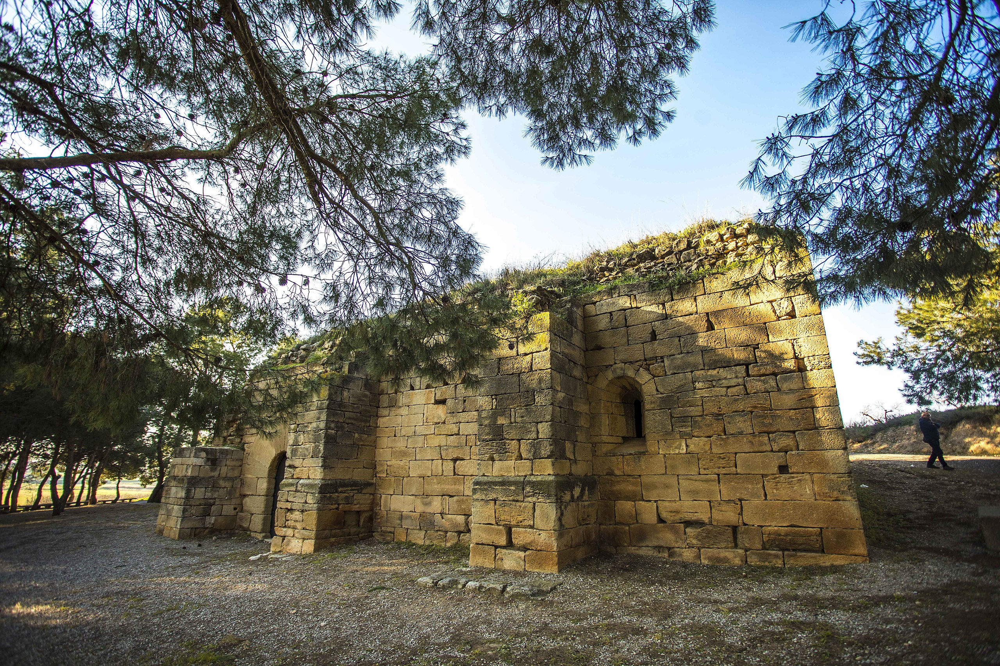

DINAR POPULAR
Una vegada hagi acabat la marxa senderista es realitzarà un dinar popular a les 14:30h del migdia, aquí podem veure alguns dels plats que tindrà el menú.


COM PUC PARTICIPAR?
Per a poder participar en aquesta marxa senderista primer tindras que omplir el formulari d'inscripció, el trobaras a l'enllaç que diu "Inscriu-te"
Inscriu-te